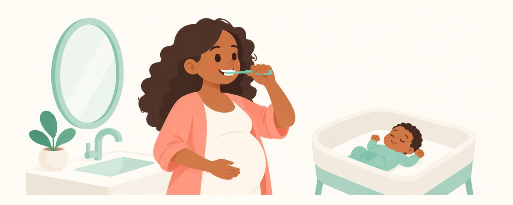

Penyakit gusi dan kelahiran prematur: apa faktanya? Panduan perawatan gusi saat hamil
Penyakit gusi berat dikaitkan dengan kelahiran prematur, tetapi belum terbukti sebagai penyebabnya. Simak beda kaitan dan sebab, perawatan gusi yang aman, dan perawatan di rumah.
Sekilas
- Dikaitkan dengan kelahiran prematur, tetapi penyebabnya belum terbukti
- Pembersihan karang gigi dan perawatan gusi aman saat hamil
- Sikat gigi dua kali sehari dan pakai benang gigi sekali sehari
Banyak ibu hamil menjadi cemas setelah mendengar "penyakit gusi bisa menyebabkan kelahiran prematur". Gusi berdarah sedikit saja sudah membuat khawatir akan terjadi sesuatu pada bayi. Berikut apa yang sudah diketahui, apa yang belum, dan apa yang bisa Anda lakukan.
Ada kaitannya, tetapi belum terbukti sebagai penyebab
Pertama, penyakit gusi punya tingkatan. Radang gusi (gingivitis) yang sering muncul saat hamil adalah tahap ketika permukaan gusi bengkak dan berdarah. Dengan menyikat gigi dan merawatnya dengan baik, radang ini mereda. Jika radang berlangsung lama sampai merusak tulang dan jaringan penyangga gigi, kondisinya disebut periodontitis. Saat periodontitis berlanjut, gusi bisa turun dan gigi bisa goyang.
Yang dibahas dalam penelitian terutama adalah penyakit gusi berat ini, yaitu periodontitis. Ada penelitian yang menemukan kelahiran prematur dan bayi berat lahir rendah sedikit lebih banyak pada ibu hamil dengan periodontitis. Namun apakah penyakit gusi benar-benar menjadi penyebabnya masih belum diketahui.
Dua hal yang muncul bersamaan tidak berarti yang satu menyebabkan yang lain. Bisa ada banyak alasan keduanya muncul bersamaan, jadi "ada kaitannya" berbeda dengan "menjadi penyebabnya".
Selain itu, bukti bahwa merawat gusi selama kehamilan menurunkan kelahiran prematur juga belum cukup. Lalu, apakah berarti tidak perlu dirawat? Tidak begitu. Perawatan gusi jelas diperlukan untuk menjaga gusi dan gigi ibu sendiri, dan aman selama kehamilan. Jika penyakit gusi dibiarkan, radangnya makin parah dan gigi bahkan bisa tanggal.
Singkatnya, memiliki penyakit gusi bukan alasan untuk cemas soal kelahiran prematur. Cukup rawat dan jaga sekarang.
Rawat dan jaga, jangan hanya cemas
Di rumah, lakukan ini.
- Sikat gigi dengan sikat berbulu lembut 2 kali sehari, perlahan menyusuri batas antara gigi dan gusi.
- Bersihkan sela gigi yang tidak terjangkau sikat dengan benang gigi 1 kali sehari.
- Jangan hindari bagian yang berdarah. Sikat lebih perlahan di sana. Jika jadi jarang disikat karena berdarah, radangnya justru makin parah.
- Pakai pasta gigi berfluoride, dan kurangi kebiasaan sering minum minuman manis dan ngemil.
Ada juga cara memantau kondisi gusi di rumah. Saat menyikat gigi, lihat warna gusi di cermin. Gusi yang sehat berwarna merah muda pucat dan melekat erat pada gigi. Jika gusi merah dan bengkak, gigi tampak lebih panjang dari sebelumnya, atau gigi terasa mengambang saat mengunyah, beri tahu dokter gigi.
Di dokter gigi, lakukan ini.
- Jika gusi berdarah atau bengkak, jalani pemeriksaan gusi (periodontal).
- Jika perlu perawatan, lakukan sekarang, jangan ditunda. Pembersihan karang gigi dan perawatan gusi aman selama kehamilan.
- Sampaikan usia kehamilan dan obat yang Anda minum. Akan lebih baik jika perawatan diselesaikan di trimester kedua, saat lebih nyaman berobat.
Pertanyaan yang sering diajukan
Gusi saya berdarah. Apakah risiko kelahiran prematur jadi tinggi?
Gusi berdarah saat hamil sebagian besar adalah radang gusi kehamilan yang umum. Yang dikaitkan dengan kelahiran prematur dalam penelitian terutama adalah periodontitis yang lebih berat. Daripada cemas, lebih baik sikat gigi dengan baik dan periksakan ke dokter gigi untuk memastikan kondisinya.
Apakah perawatan gusi bisa mencegah kelahiran prematur?
Bukti bahwa perawatan gusi selama kehamilan menurunkan kelahiran prematur belum cukup. Meski begitu, perawatan gusi diperlukan untuk kesehatan ibu dan aman dilakukan selama kehamilan.
Bolehkah dirawat setelah melahirkan saja?
Setelah bayi lahir, meluangkan waktu ke dokter gigi menjadi lebih sulit. Jika perlu perawatan, sebaiknya lakukan selama kehamilan dan jangan ditunda.
Bagaimana tahu penyakit gusi saya gingivitis atau periodontitis?
Sulit dibedakan dengan tepat di rumah. Gusi yang turun atau gigi yang goyang bisa menjadi tanda periodontitis. Hal ini bisa dipastikan lewat pemeriksaan gusi di dokter gigi, jadi jangan ragu menjalaninya selama hamil.
Apakah pembersihan karang gigi berbahaya bagi bayi?
Pembersihan karang gigi dan perawatan gusi aman selama kehamilan. Cukup sampaikan usia kehamilan Anda kepada dokter gigi.
Kapan perlu ke dokter gigi
- Gusi berdarah atau bengkak berlangsung lebih dari 2 minggu
- Gusi turun sehingga gigi tampak lebih panjang
- Gigi goyang atau terasa mengambang saat mengunyah
- Keluar nanah dari gusi atau bau mulut makin parah
- Belum pernah menjalani pemeriksaan gusi sejak hamil
Dapatkan di waktu yang tepat
Masukkan tanggal lahir anak Anda (atau perkiraan tanggal persalinan) di aplikasi Kalender Gigi, dan artikel-artikel ini akan datang sebagai pengingat tepat saat dibutuhkan. Gratis, tanpa daftar.
Sumber
- AAPD · Perinatal and Infant Oral Health Care (2023)
- Cochrane · Treating gum disease to prevent adverse birth outcomes in pregnant women (2017)
Informasi dalam aplikasi ini bersifat edukasi umum dan tidak menggantikan perawatan gigi oleh tenaga profesional. Konsultasikan kondisi anak Anda dengan dokter gigi.